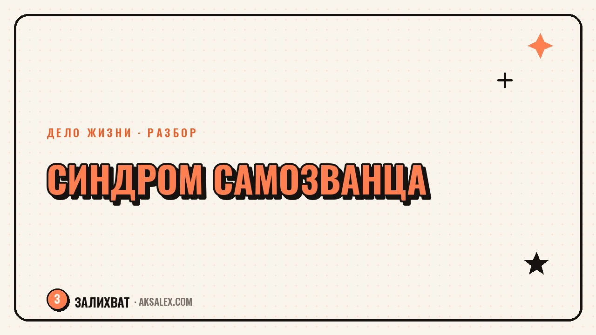

Синдром самозванца: почему он есть и что с ним делать

Ты получила повышение, а в голове крутится мысль «просто повезло, скоро все поймут, что я не справляюсь». Знакомое чувство называется синдромом самозванца, и с ним сталкиваются почти все, кто хоть раз вырос из своей прежней роли - от студентов до руководителей с двадцатилетним стажем. Разберём, откуда берётся это чувство и что с ним реально делать, без коучингового пафоса и обещаний решить всё за один вечер.
Что такое синдром самозванца на самом деле
Синдром самозванца - это устойчивое ощущение, что твои достижения не заслужены, а объясняются везением, случайностью или обманом окружающих. Человек с этим чувством постоянно ждёт момента, когда «раскроется правда» о его некомпетентности, даже если объективно результаты говорят об обратном.
Это не официальный психиатрический диагноз, а описанное психологами явление, знакомое очень многим людям, добившимся реальных результатов. Парадокс в том, что чаще с ним сталкиваются не худшие, а как раз способные и ответственные люди - потому что у них выше внутренняя планка и острее самокритика.
- Успех объясняешь везением, а не своими усилиями и навыками
- Боишься, что коллеги заметят несоответствие своей репутации
- Обесцениваешь похвалу словами «это было несложно»
- Работаешь на износ, чтобы компенсировать мнимую некомпетентность
Откуда берётся это чувство
Резкий рост или смена роли
Чувство обостряется в моменты перехода: новая должность, смена профессии, первый крупный клиент. Мозг сравнивает тебя нынешнюю с собой прежней и не успевает обновить внутреннее представление о собственной компетентности - отсюда ощущение, что ты «играешь роль», а не действительно справляешься.
Среда, где не принято говорить о трудностях
Если вокруг все выглядят уверенно и никто не показывает сомнений, легко решить, что трудно только тебе. На деле большинство людей в такой же ситуации испытывают похожие сомнения, но молчат об этом по тем же причинам, что и ты.
| Триггер | Как это выглядит | Что помогает |
|---|---|---|
| Новая должность | Кажется, что взяли по ошибке | Список конкретных задач, которые уже решены |
| Публичное выступление | Страх, что зададут вопрос без ответа | Заранее продуманные ответы на сложные вопросы |
| Сравнение с другими | Все выглядят увереннее тебя | Разговор с коллегой напрямую о сомнениях |
Что делать, когда накрывает прямо сейчас
Практика на один вечер
- Выпиши три конкретных факта, а не ощущения - что именно ты сделала и с каким результатом
- Отдели факт от интерпретации: «отчёт приняли без правок» - это факт, «просто повезло» - интерпретация
- Спроси себя: какие доказательства нужны, чтобы поверить в свою компетентность, и есть ли они уже
- Назови вслух или запиши, чему конкретно ты научилась за последний год
Синдром самозванца не проходит от одной уверенной мысли - он ослабевает, когда накапливается достаточно фактов, которые противоречат этому чувству.
Это упражнение не убирает сомнение полностью за один раз, но постепенно строит альтернативный набросок - тот, где твои результаты объясняются не удачей, а конкретными действиями, которые можно перечислить.
Как работать с этим чувством вдолгую
Разовые упражнения снимают острое состояние, но само чувство обычно возвращается в новых ситуациях. Работать с ним вдолгую - значит менять привычные реакции, а не искать один универсальный совет.
Полезно завести привычку фиксировать завершённые задачи и обратную связь в одном месте - не для отчёта перед кем-то, а чтобы было куда заглянуть в момент сомнений, вместо того чтобы полагаться на память, которая хранит в основном неудачи.
- Веди короткий список завершённых задач и полученной обратной связи
- Разговаривай о сомнениях с человеком, которому доверяешь, а не только с собой
- Замечай, когда сравниваешь свою внутреннюю неуверенность с чужой внешней уверенностью
- Не жди полного исчезновения сомнений перед следующим шагом
Когда сомнение - это не синдром самозванца
Важно не путать синдром самозванца с реальной обратной связью о том, что навыков пока не хватает. Если ты недавно в профессии и объективно есть чему учиться, это нормальный этап - здесь помогает не самоубеждение, а обучение и практика.
Отличить одно от другого просто: синдром самозванца обесценивает уже подтверждённые результаты, а честная нехватка опыта - это список навыков, которые предстоит освоить. Первое лечится фактами о прошлом, второе - планом на будущее.
Частые вопросы
Синдром самозванца - это психическое расстройство?
Нет, это не медицинский диагноз, а описанное психологами явление, с которым сталкиваются очень многие успешные люди. Если сомнения мешают жить и работать постоянно и очень сильно, стоит обратиться к психологу, но само по себе чувство - не болезнь.
Почему синдром самозванца чаще встречается у способных людей?
У них обычно выше внутренняя планка и острее самокритика, поэтому даже реальные достижения кажутся недостаточными. Менее ответственные люди реже задумываются о соответствии ожиданиям настолько глубоко.
Как быстро избавиться от синдрома самозванца перед важным событием?
Полностью избавиться за один вечер не получится, но можно снизить остроту: выпиши конкретные факты своих достижений и отдели их от интерпретаций вроде «просто повезло». Это не уберёт сомнение, но даст опору перед выступлением или встречей.
Как отличить синдром самозванца от реальной нехватки опыта?
Синдром самозванца обесценивает уже подтверждённые результаты, а нехватка опыта - это конкретный список навыков, которых пока действительно нет. Первое лечится фактами о прошлом, второе - обучением и практикой.
Помогает ли разговор с другими людьми при синдроме самозванца?
Да, часто оказывается, что коллеги испытывают похожие сомнения, но молчат об этом по тем же причинам. Открытый разговор снижает ощущение, что трудно только тебе одной, и возвращает чувство нормальности происходящего.
Раз тема оказалась полезной, вот что почитать следующим. Как нейросеть помогает разобраться в договоре и найти рискованные пункты до подписи.
Читать статью →а не вручную